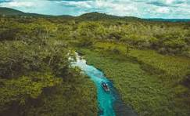

Mato Grosso é um estado localizado na região Centro-Oeste do Brasil, conhecido por sua vasta extensão de cerrado, floresta amazônica e áreas de pantanal. Sua natureza é bastante diversificada, oferecendo rios, cachoeiras e uma rica biodiversidade, especialmente no Pantanal, uma das maiores áreas alagadas do mundo e um paraíso para observação de animais e ecoturismo. A capital, Cuiabá, é uma cidade vibrante, com forte influência cultural indígena e pantaneira. Mato Grosso também é um grande produtor de soja, milho, algodão e carne bovina, sendo uma das principais regiões agrícolas do país. Além disso, o estado tem uma economia em crescimento, impulsionada pela agroindústria e pelo setor de mineração. Com sua natureza exuberante e economia forte, Mato Grosso é uma região de grande importância e beleza no Brasil.
